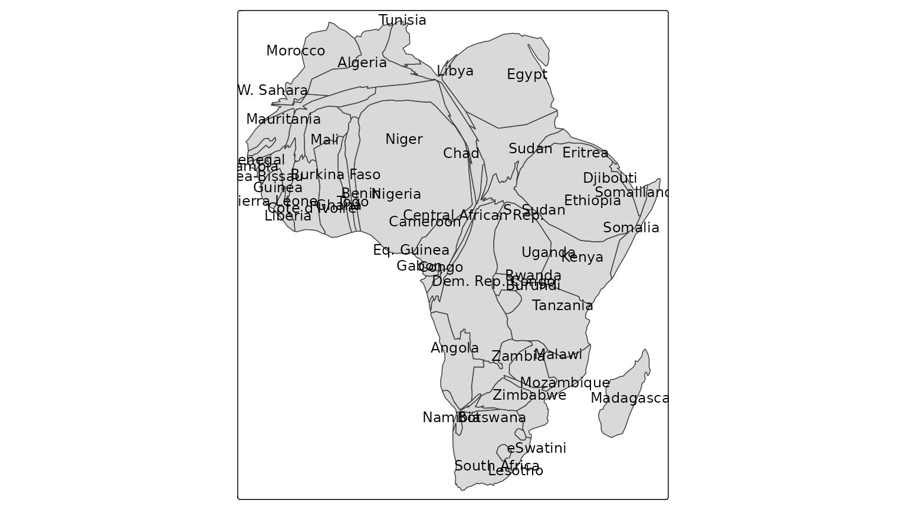
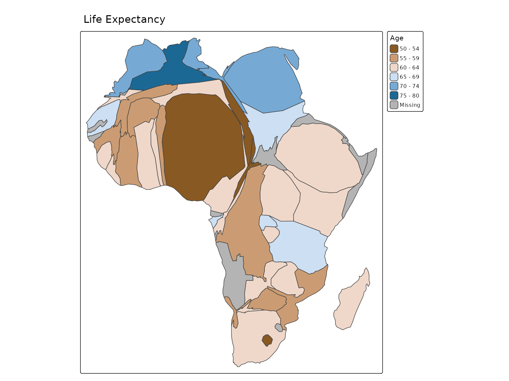
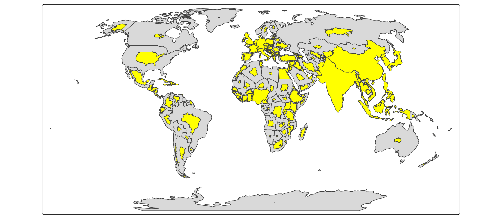
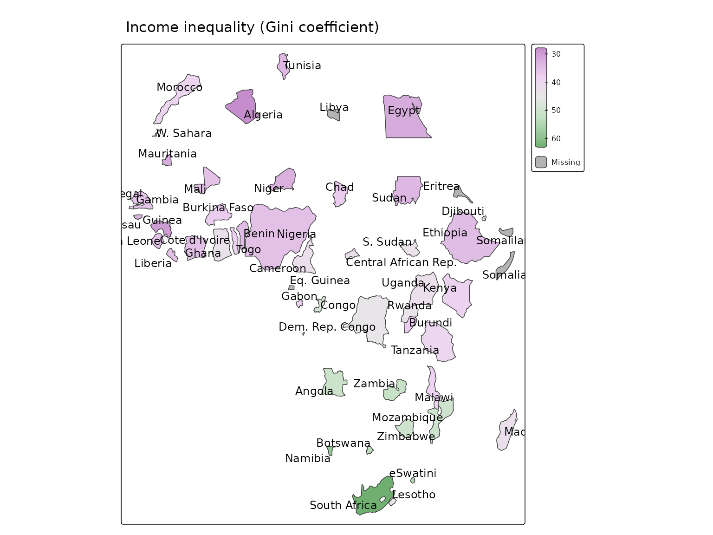
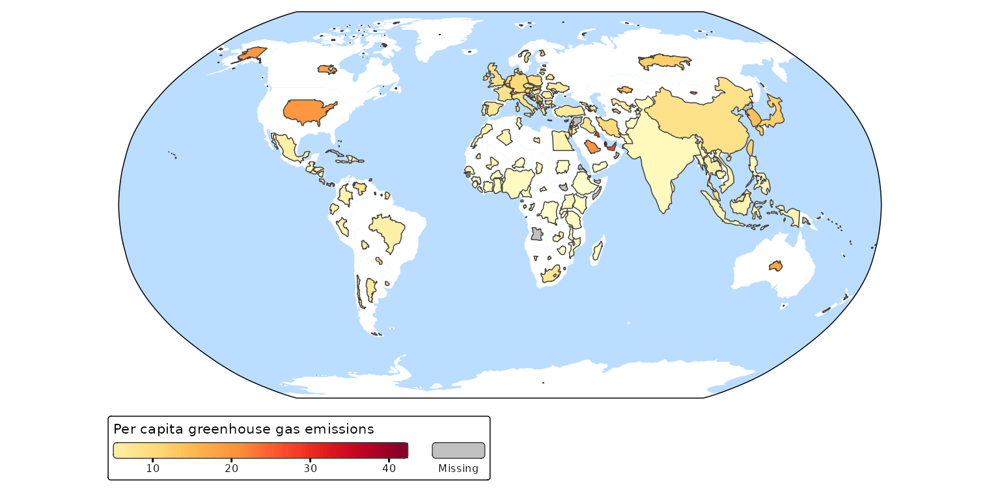
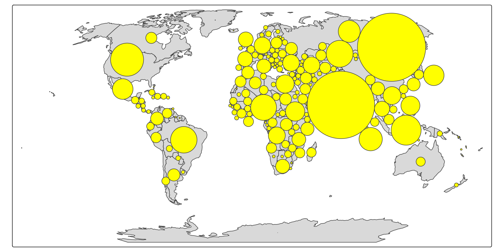
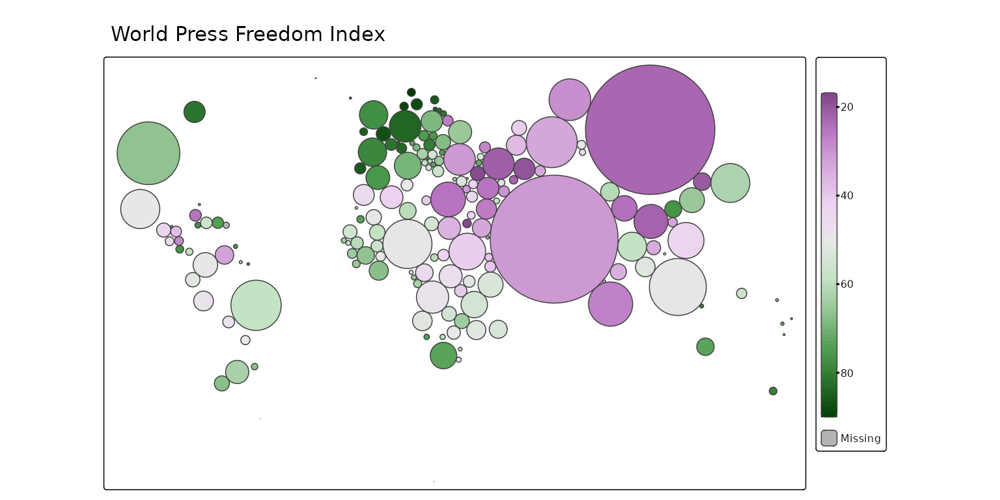

Cartogram
In cartograms, areal regions are distorted such that the obtained area sizes are proportional to a quantitative variable. We facilitate the following types:
- The contiguous cartogram, where the shapes of the polygons are distorted, where the neighborhood relationships between them are preserved as much as possible.
- The non-contiguous cartogram, where the polygons are only resized while they keep their shape.
- The Dorling cartogram where polygons are replaced by bubbles. Note that this is different from the bubble map: in a Dorlong cartogram the bubbles do not overlap. To achieve non-overlapping bubbles that are proportional to the target variable, the bubbles may be relocated.
Currently, this packages uses the cartogram package by Sebastian Jeworutzki under the hood.
Map projection
In order to work well, it is strongly recommended to use a projected CRS (map projection) that is (approximately) equal-area. Why? Because the cartograms transformation require that that the area of polygons is approximately proportional to the real areas. This is not the case for the mercator projection (plain lat/lon coordinates).
For these examples we use the Robinson projection. If you are unsure
which to use, set crs = "auto" which enables a
(work-in-progress) automatic map projection recommendation.
In addition, this crs must be set in tm_shape(),
and not afterwards via tm_crs().
Why? Because the former ensures that the transformation is applied in
the correct CRS, whereas the latter is used for plotting only.
Finally, we recommend to disable basemaps in view mode. Not only because the polygons will be distorted (and therefore will not be consistent with the basemaps), but because basemaps are usually rendered in the (pseudo) mercator projection. By default a spatial object will keep its projected CRS when basemaps are disabled.
Contiguous cartograms
Africa = World[World$continent == "Africa", ]
tm_shape(Africa, crs = "+proj=robin") +
tm_cartogram(size = "pop_est", options = opt_tm_cartogram(itermax = 15))
#> Cartogram in progress...
We can use polygon fill color to depict a variable, such as Happy Planet Index:
tm_shape(Africa, crs = "+proj=robin") +
tm_cartogram(size = "pop_est",
fill = "life_exp",
fill.scale = tm_scale_intervals(values = "-cols4all.bu_br_div"),
fill.legend = tm_legend("Age"),
options = opt_tm_cartogram(itermax = 15)) +
tm_title("Life Expectancy")
Non-contiguous cartograms
tm_shape(Africa, crs = "+proj=robin") +
tm_cartogram_ncont(size = "pop_est", options = opt_tm_cartogram_ncont())
#> Cartogram in progress...
tm_shape(Africa, crs = "+proj=robin") +
tm_cartogram_ncont(size = "pop_est",
fill = "inequality",
fill.scale = tm_scale_continuous(values = "cols4all.pu_gn_div", values.range = c(0, 0.5)),
fill.legend = tm_legend(""),
options = opt_tm_cartogram_ncont()) +
tm_text("name", options = opt_tm_text(point.label = TRUE)) +
tm_title("Income inequality (Gini coefficient)")
A non-contiguous cartogram of the World. The countries are resized relative to population. The colors indicate carbon footprint.
tm_shape(World, crs = "+proj=robin") +
tm_polygons(fill = "white", col = NULL) +
tm_cartogram_ncont(
size = "pop_est",
fill = "footprint",
fill.legend = tm_legend("Per capita greenhouse gas emissions",
orientation = "landscape", bg.color = "white"),
fill.scale = tm_scale_continuous(values = "brewer.yl_or_rd",
values.range = c(0, 1))) +
tm_layout(earth_boundary = TRUE,
frame = FALSE,
earth_boundary.lwd = 2,
bg.color = "#bbddff",
space.color = "white")
#> Cartogram in progress...
Dorlin cartograms
tm_shape(World, crs = "+proj=robin") +
tm_polygons() +
tm_cartogram_dorling(size = "pop_est", fill = "yellow")
#> Cartogram in progress...
We can the bubble fill color to show some other data, such as press freedom:
tm_shape(World, crs = "+proj=robin") +
tm_cartogram_dorling(size = "pop_est",
fill = "press",
fill.scale = tm_scale_continuous(values = "cols4all.pu_gn_div", midpoint = 50),
fill.legend = tm_legend("", height = 30)) +
tm_title("World Press Freedom Index")
View mode
These maps are also available interactively. As noted above the trick
in tmap is to disable basemaps. This can be done with
tm_basemap(NULL):
tmap_mode("view")
#> ℹ tmap mode set to "view".
tm_shape(World, crs = "+proj=robin") +
tm_cartogram_dorling(size = "pop_est",
fill = "press",
fill.scale = tm_scale_continuous(values = "cols4all.pu_gn_div", midpoint = 50),
fill.legend = tm_legend("", height = 30)) +
tm_title("World Press Freedom Index") +
tm_basemap(NULL)
#> [view mode] WebGL does not work (yet) with projected map projections, so it has
#> been disabled.
#> This message is displayed once per session.